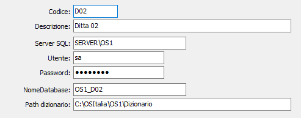

La procedura consente di specificare database aggiuntivi che sarà possibile utilizzare per creare statistiche personalizzate.

CODICE: codice del database.
DESCRIZIONE: descrizione del database.
SERVER SQL: nome del server SQL sul quale è presente il database; se vuoto viene utilizzato lo stesso server SQL della ditta di OS1.
UTENTE: nome utente per la connessione; se vuoto viene utilizzato lo stesso utente della ditta di OS1.
PASSWORD: password per la connessione; se vuota viene utilizzato la stessa password della ditta di OS1.
NOME DATABASE: nome del database da utilizzare. Non può essere lasciato vuoto.
PATH DIZIONARIO: indicare la path del dizionario relativo al database sopra impostato.